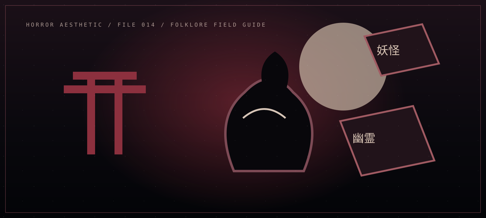

FILE 014 / FOLKLORE FIELD GUIDE
THE YŌKAI BESTIARUM
A field guide to yōkai, yūrei and Japanese urban legends, with cultural context and cinema connections.

A field guide to yōkai, yūrei and Japanese urban legends, with cultural context and cinema connections.
